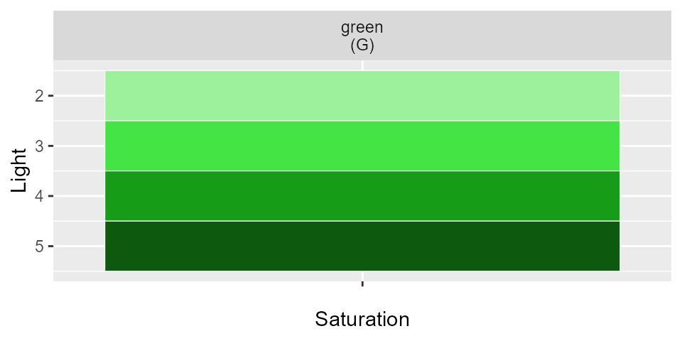

Trying to find a good color palette in R is difficult. I think most people search google for ggplot colors and end up looking at some wild image like shown below on the right. These colors are used in grDevices::colors and are actually from the X11 colors that were developed in the 1980s. Unfortunately, they have inconsistent names and the lightness/saturation are all over the place. Using the colorspace::HLS() function however, a smaller, consistent set of colors allows palettes to be made both within one color or across hues.
Here’s a comparison of the base X11 colors (left) and the simplecolors (right).

Construction
To get started there are 8 hues, 4 types of saturation, and 5 levels of lightness plus a greyscale. To use a color, just combine the 3 parts:
| optional saturation | color name | lightness |
|---|---|---|
| bright | red | 1 |
| "" | orange | 2 |
| muted | yellow | … |
| dull | … | 5 |
| grey | 0-6 |
For example, the following code will return the corresponding hex values
-
sc("blue")= #4479E4 -
sc("blue5")= #0D2659 -
sc("dullblue3")= #7489B4
The sc() function
This function stands for simplecolors. You can specify base colors
sc("red", "violet", "pink")#> [1] "#E44444" "#9444E4" "#E444E4"or add modifiers
sc("brightblue4", "mutedorange5", "grey3")#> [1] "#003CB3" "#4D3C19" "#949494"Palettes
There are multiple ways to access palettes
-
sc_within()- within 1 hue, the default is a lightness of 2:6, and no modifier (sat == "") -
sc_across()- holding light and saturation constant (at your choosing), a palette will be built across hues in the order you specify. The palette order is created using the first letter (uppercase) of each color, or “Gy” for “grey”. -
sc_[color]()there is a shortcut ofsc_within()for each of the hues, for examplesc_teal(),sc_red(), etc.

sc_within(hue = "teal", light = 3:5, sat = "bright")#> [1] "#29FFFF" "#00B3B3" "#006666"sc_across(palette = "OTVGy", light = 4, sat = "muted")#> [1] "#86682D" "#2D8686" "#592D86" "#595959"Types of outputs
There are 3 main outputs for these palettes that can be specified via return =
Using sc_within()
sc_within(hue = "blue", light = 2:5, sat = "") #defaults#> [1] "#9DB9F1" "#4479E4" "#16439C" "#0D2659"sc_within(hue = "blue", return = "table")#> # A tibble: 4 x 2
#> color_name hex
#> <chr> <chr>
#> 1 blue2 #9DB9F1
#> 2 blue3 #4479E4
#> 3 blue4 #16439C
#> 4 blue5 #0D2659sc_within(hue = "blue", return = "plot")
Using sc_across()
sc_across(palette = "ROY", light = 3)#> [1] "#E44444" "#E4AF44" "#E4E444"sc_across(palette = "ROY", light = 3, return = "table")#> color_name hex
#> 1 red3 #E44444
#> 2 orange3 #E4AF44
#> 3 yellow3 #E4E444sc_across(palette = "ROY", light = 3, sat = "bright", return = "plot")
Here is a list of all colors abbreviations you can use in the palette
#> # A tibble: 9 x 2
#> color letter
#> <chr> <chr>
#> 1 red R
#> 2 orange O
#> 3 yellow Y
#> 4 green G
#> 5 teal T
#> 6 blue B
#> 7 violet V
#> 8 pink P
#> 9 grey Gy
sc_red(), sc_blue(), etc…
There is also a sc_within() palette defaulted for each color
sc_red(1:4, "bright")#> [1] "#FFCCCC" "#FF8F8F" "#FF2929" "#B30000"sc_blue(5:2, return = "table")#> # A tibble: 4 x 2
#> color_name hex
#> <chr> <chr>
#> 1 blue5 #0D2659
#> 2 blue4 #16439C
#> 3 blue3 #4479E4
#> 4 blue2 #9DB9F1
And here’s an example where you might use it in a ggplot
blue_and_red <- c(
sc_blue(4:2, "bright"),
sc_red(2:4, "bright")
)
iris %>%
mutate(cut = ntile(Sepal.Length, 6)) %>%
ggplot(aes(Sepal.Width, Sepal.Length, color = factor(cut))) +
geom_count(size = 5) +
#setting your custom gradients
scale_color_manual(values = blue_and_red) +
theme_minimal()